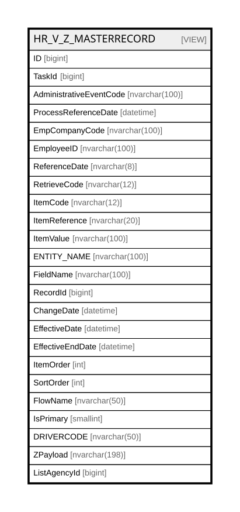

HR_V_Z_MASTERRECORD
Description
Table Definition
-- Talentia Software - All right reserved
-- Type: VIEW Name: HR_V_Z_MASTERRECORD
-- Date: 09-04-2026 07:27:59 (UTC)
--
-- ChangeLogId: 00000000-0000-0000-0000-000000000000
-- ChangeSetId: 0f1d5509-2789-40e3-9fb4-206bcd9c90e0
-- Original file name: C:\repos\Talentia-Software\hcm-core/DB/ProductDB/EDM\Schema\Views\HR_V_Z_MASTERRECORD.xml
CREATE VIEW [HR_V_Z_MASTERRECORD]
( ID, TaskId, AdministrativeEventCode, ProcessReferenceDate, EmpCompanyCode, EmployeeID, ReferenceDate, RetrieveCode, ItemCode, ItemReference, ItemValue, ENTITY_NAME, FieldName, RecordId, ChangeDate, EffectiveDate, EffectiveEndDate, ItemOrder, SortOrder, FlowName, IsPrimary, DRIVERCODE, ZPayload, ListAgencyId )
AS
( SELECT DISTINCT
ROW_NUMBER() OVER (ORDER BY ZVF.TaskId, ZVF.EmpCompanyCode, ZVF.EmployeeID, ZVF.SortOrder, ZVF.ReferenceDate, ZVF.EffectiveEndDate, ZVF.EffectiveDate, ZVF.ChangeDate) AS ID,
ZVF.TaskId,
ZVF.AdministrativeEventCode,
ZVF.ProcessReferenceDate,
ZVF.EmpCompanyCode,
ZVF.EmployeeID,
ZVF.ReferenceDate,
ZVF.RetrieveCode,
ZVF.ItemCode,
ZVF.ItemReference,
ZVF.ItemValue,
ZVF.ENTITY_NAME,
ZVF.FieldName,
ZVF.RecordId,
ZVF.ChangeDate,
ZVF.EffectiveDate,
ZVF.EffectiveEndDate,
ZVF.ItemOrder,
ZVF.SortOrder,
ZVF.FlowName,
ZVF.IsPrimary,
ZVF.DRIVERCODE,
-- Payload to transmit
CAST(ZVF.EmpCompanyCode AS nvarchar(20)) + ';' +
CAST(ZVF.EmployeeId AS nvarchar(20)) + ';' +
CAST(ZVF.ReferenceDate AS nvarchar(8)) + ';' +
CAST(ZVF.RetrieveCode AS nvarchar(12)) + ';' +
CAST(ZVF.ItemCode AS nvarchar(12)) + ';' +
CAST(ZVF.ItemReference AS nvarchar(20)) + ';' +
CAST(COALESCE(ZVF.ItemValue, ' ') AS nvarchar(100)) AS ZPayload,
ZVF.ListAgencyId
FROM
(
SELECT
VFD.TaskId,
VFD.AdministrativeEventCode,
VFD.ProcessReferenceDate,
-- Zucchetti key.
VFD.EmpCompanyCode,
VFD.EmployeeID,
CONVERT(nvarchar(8), VFD.ReferenceDate, 112) AS ReferenceDate,
VFD.RECEPTION_CODE AS RetrieveCode,
VFD.ItemCode,
-- The Item Reference may depend on the data retrieved: use a function.
dbo.HR_Z_GetItemReference
(
VFD.TaskID,
TEN.RECORD_ID,
VFD.ITEMCODE,
VFD.ITEMREFERENCE,
TEN.ENTITY_NAME,
TEN.FieldName
) AS ItemReference,
-- The value comes from a function in order to return manipulated data or data as is.
---- If NULL, return a blank char (in order to build the vertical reception correctly).
--COALESCE (
dbo.HR_Z_GetAdmEvTransposedValue
(
VFD.TaskId,
VFD.RecordID,
VFD.ItemCode,
VFD.ItemReference,
VFD.FIELD_TYPE,
TEN.FIELDVALUE_INT,
TEN.FIELDVALUE_STRING,
TEN.FIELDVALUE_STRING_DESC,
TEN.FIELDVALUE_DATETIME,
TEN.FIELDVALUE_BOOL,
TEN.FIELDVALUE_DECIMAL,
VFD.DEFAULTVALUE
--),
--' '
) AS ItemValue,
-- CoreHR task data.
TEN.ENTITY_NAME,
TEN.FieldName,
TEN.RECORD_ID AS RecordId,
-- Dates.
COALESCE(TEN.CHANGEDATE,
(
SELECT
MAX(CHG.CHANGEDATE)
FROM
HR_TRANSPOSEDENTITY CHG
WHERE
CHG.TASK_ID = VFD.TaskID
) ) AS ChangeDate,
COALESCE(TEN.EFFECTIVEFROM, '1900-01-01') AS EffectiveDate,
COALESCE(TEN.EFFECTIVETO, '2999-12-31') AS EffectiveEndDate,
-- Sort.
TEN.ITEMORDER AS ItemOrder,
VFD.SORTORDER AS SortOrder,
-- To be managed
VFD.ZFLOWNAME AS FlowName,
TEN.ISPRIMARY AS IsPrimary,
VFD.DRIVERCODE,
VFD.LISTAGENCY_ID AS ListAgencyId
FROM
(
-- Extract the keys for the vertical representation.
SELECT
TaskID
, ProcessReferenceDate
, AdministrativeEventCode
, RootID
, RecordID
, EmpCompanyCode
, EmployeeID
, ReferenceDate
, ZFLOWNAME
, ITEMCODE
, ITEMREFERENCE
, RECEPTION_CODE
, ENTITY_NAME
, FIELD_NAME
, FIELD_TYPE
, DEFAULTVALUE
, SORTORDER
, ENTITYCLUSTERCODE
, DRIVERCODE
, LISTAGENCY_ID
FROM
(
-- Extract the keys for the entity-field pairs defined in the data dictionary.
SELECT DISTINCT
TRE.TASK_ID TaskID
, PRC.REFERENCE_DATE ProcessReferenceDate
, TRE.ADMINISTRATIVEEVENTCODE AdministrativeEventCode
, TRE.ROOT_ID RootID
, TRE.RECORD_ID RecordID
, dbo.HR_Z_GetCompanyCode(TRE.TASK_ID, TRE.ROOT_ID, PRC.REFERENCE_DATE) EmpCompanyCode
, dbo.HR_Z_GetEmployeeID(TRE.TASK_ID, TRE.ROOT_ID, TRE.RECORD_ID, PRC.REFERENCE_DATE) EmployeeID
, dbo.HR_Z_GetEffectiveStartDate(TRE.TASK_ID, TRE.ROOT_ID, TRE.RECORD_ID, PRC.REFERENCE_DATE, TRE.ENTITY_NAME, ZFD.ENTITYCLUSTERCODE) ReferenceDate
, ZFD.ZFLOWNAME
, ZFD.ITEMCODE
, ZFD.ITEMREFERENCE
, ZFD.RECEPTION_CODE
, ZFD.ENTITY_NAME
, ZFD.FIELD_NAME
, ZFD.FIELD_TYPE
, ZFD.DEFAULTVALUE
, ZFD.SORTORDER
, ZFD.ENTITYCLUSTERCODE
, ZFD.DRIVERCODE
, TRE.LISTAGENCY_ID
FROM
HR_TRANSPOSEDENTITY TRE
--INNER JOIN TF_WFRT_TASKS TSK ON TSK.ID = TRE.TASK_ID
--INNER JOIN TF_WFRT_PROCESSES PRC ON PRC.ID = TSK.INSTANCE_ID
INNER JOIN TF_WFRT_PROCESSES PRC ON PRC.ID = TRE.TASK_ID
INNER JOIN HR_Z_FLOWDEFINITION ZFD ON ZFD.ENTITY_NAME = TRE.ENTITY_NAME AND ZFD.FIELD_NAME = dbo.HR_Z_GetTransposedFieldName(TRE.TASK_ID, TRE.RECORD_ID, TRE.ENTITY_NAME, TRE.FIELD_NAME) AND ZFD.ZFLOWNAME IN ('ENT_COMMON_Z', 'EMP_MASTERRECORD_Z')
UNION
-- Extract the keys for the definitions in the data dictionary with no correspondence with an entity-field pair.
SELECT DISTINCT
TRE.TASK_ID TaskID
, PRC.REFERENCE_DATE ProcessReferenceDate
, ADMINISTRATIVEEVENTCODE AdministrativeEventCode
, TRE.ROOT_ID RootID
, TRE.ROOT_ID RecordID
, dbo.HR_Z_GetCompanyCode(TRE.TASK_ID, TRE.ROOT_ID, PRC.REFERENCE_DATE) EmpCompanyCode
, dbo.HR_Z_GetEmployeeID(TRE.TASK_ID, TRE.ROOT_ID, TRE.RECORD_ID, PRC.REFERENCE_DATE) EmployeeID
, dbo.HR_Z_GetEffDateOnClusterCode(TRE.TASK_ID, TRE.ROOT_ID, TRE.RECORD_ID, PRC.REFERENCE_DATE, ZFD.ENTITYCLUSTERCODE) ReferenceDate
, ZFD.ZFLOWNAME
, ZFD.ITEMCODE
, ZFD.ITEMREFERENCE
, ZFD.RECEPTION_CODE
, ZFD.ENTITY_NAME
, ZFD.FIELD_NAME
, ZFD.FIELD_TYPE
, ZFD.DEFAULTVALUE
, ZFD.SORTORDER
, ZFD.ENTITYCLUSTERCODE
, ZFD.DRIVERCODE
, TRE.LISTAGENCY_ID
FROM
HR_TRANSPOSEDENTITY TRE
--INNER JOIN TF_WFRT_TASKS TSK ON TSK.ID = TRE.TASK_ID
--INNER JOIN TF_WFRT_PROCESSES PRC ON PRC.ID = TSK.INSTANCE_ID
INNER JOIN TF_WFRT_PROCESSES PRC ON PRC.ID = TRE.TASK_ID
--INNER JOIN HR_Z_FLOWDEFINITION ZFD ON ZFD.ENTITY_NAME IS NULL
INNER JOIN HR_Z_FLOWDEFINITION ZFD ON ZFD.ITEMCODE in ('DUMMY','DUMMY1','IDTPSUBJ') AND ZFD.ZFLOWNAME IN ('ENT_COMMON_Z','EMP_MASTERRECORD_Z')
) TEK
) VFD
--
LEFT OUTER JOIN
(
SELECT
TPA.TASK_ID,
TPA.ENTITY_NAME,
-- Use a function to get the Field name, for those cases where it must be manipulated.
dbo.HR_Z_GetTransposedFieldName
(
TPA.TASK_ID,
TPA.RECORD_ID,
TPA.ENTITY_NAME,
TPA.FIELD_NAME
) AS FieldName,
--
TPA.RECORD_ID,
TPA.ADMINISTRATIVEEVENTCODE,
TPA.PROCESS_STAGE,
TPA.ISFINALSTAGE,
TPA.FIELDVALUE_INT,
TPA.FIELDVALUE_STRING,
TPA.FIELDVALUE_STRING_DESC,
TPA.FIELDVALUE_DATETIME,
TPA.FIELDVALUE_BOOL,
TPA.FIELDVALUE_DECIMAL,
TPA.CHANGEDATE,
TPA.EFFECTIVEFROM,
TPA.EFFECTIVETO,
TPA.ITEMORDER,
TPA.ISCHANGED,
TPA.ISPRIMARY,
TPA.LISTAGENCY_ID
FROM
HR_TRANSPOSEDENTITY TPA
) TEN ON TEN.TASK_ID = VFD.TaskId AND TEN.ENTITY_NAME = VFD.ENTITY_NAME AND TEN.FieldName = VFD.FIELD_NAME AND TEN.RECORD_ID = VFD.RecordID
AND ((TEN.LISTAGENCY_ID IS NULL AND VFD.LISTAGENCY_ID IS NULL) OR (TEN.LISTAGENCY_ID = VFD.LISTAGENCY_ID))
) ZVF
-- Exclude the rows containing NULL values, not to pass through non-significant fields.
-- This implies that
-- - only changed values will travel when in UPDATE mode
-- - the target system will populate the missing fields when in INSERT mode
WHERE
ZVF.ItemValue IS NOT NULL )
Columns
| Name | Type | Default | Nullable | Comment |
|---|---|---|---|---|
| ID | bigint | true | ||
| TaskId | bigint | false | ||
| AdministrativeEventCode | nvarchar(100) | true | ||
| ProcessReferenceDate | datetime | true | ||
| EmpCompanyCode | nvarchar(100) | true | ||
| EmployeeID | nvarchar(100) | true | ||
| ReferenceDate | nvarchar(8) | true | ||
| RetrieveCode | nvarchar(12) | false | ||
| ItemCode | nvarchar(12) | false | ||
| ItemReference | nvarchar(20) | true | ||
| ItemValue | nvarchar(100) | true | ||
| ENTITY_NAME | nvarchar(100) | true | ||
| FieldName | nvarchar(100) | true | ||
| RecordId | bigint | true | ||
| ChangeDate | datetime | true | ||
| EffectiveDate | datetime | true | ||
| EffectiveEndDate | datetime | true | ||
| ItemOrder | int | true | ||
| SortOrder | int | false | ||
| FlowName | nvarchar(50) | false | ||
| IsPrimary | smallint | true | ||
| DRIVERCODE | nvarchar(50) | true | ||
| ZPayload | nvarchar(198) | true | ||
| ListAgencyId | bigint | true |
Referenced Tables
| Name | Columns | Comment | Type |
|---|---|---|---|
| a | 0 | ||
| HR_TRANSPOSEDENTITY | 22 | Transposed Entity - When TransposeDatasource rule is active, the entities of the datasource of the process workflow are transpose in this entity |
BASIC TABLE |
| Extract | 0 | ||
| TF_WFRT_TASKS | 34 | Tasks - Workflow Runtime Tasks |
BASIC TABLE |
| TF_WFRT_PROCESSES | 29 | Process Instances - Workflow Runtime Processes View |
BASIC TABLE |
| HR_Z_FLOWDEFINITION | 20 | Zucchetti Flow Definition - Dictionary containing mappings between Zucchetti and HCM fields. |
BASIC TABLE |
Relations

Generated by tbls